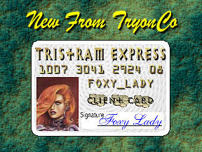
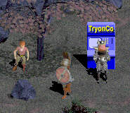
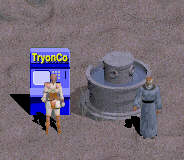
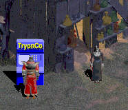
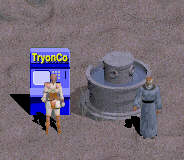
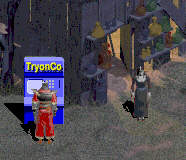
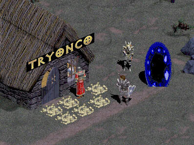

Another Exclusive from TryonCo!
Hello My Friends
Ask yourself these questions:
- Are you running out of inventory slots to place all that gold you need to purchase new weapons from Griswold?
- The netherworlds below Tristram can be a dangerous place. Do you worry about carrying all that gold around with you...what with the recent rise of muggings from some of the less savory adventurers that inhabit these regions?
- Have you ever left gold in town just to return and find it stolen by some unscrupulous thief?
- Your character isn't looking any younger! Are you putting away a little for a rainy day? Remember it will be several hundred years before the government of Tristram comes up with Old Age Security Benefits!
- Does Wirt offer you a Legit Goldly Plate of Whatever and and all you can do is think to yourself, "If only I had an extra 50,000 gold!"
If the answer to ANY of these questions was 'YES', you need:
"The TRISTRAM EXPRESS GOLD CARD"

This is the ONLY card you will EVER need!
Here are some of the benefits!
- No limit on the amount of gold you can save.
- Only occupies one inventory slot.
- Verifies your b.Net account# and personal password before allowing transactions.
- 24 Hour toll-free ICQ# to report lost or stolen cards.
- Emergency Loan Privileges (O.A.C.)
- The most widely-accepted card in Tristram.
- Convenient ATM machines throughout Tristram.
- Convenient Deposit Centres at the Top of the Stairs for every level.
- Local Employer (Gillian is now a full-time teller!)
- Full service location next to the Town Portal Exit.
- Useful to youthful looking players as photo-ID at Ogden's.
- Includes free PK and AD&D insurance!
- Optional Registered Retirement Savings Plan automatic deposit.
Well! Sign up today.
Convenient TryonCo ATM's are located in
all major shopping areas!
 

Prefer Personalized Service?
Visit our Main Branch located only steps away from the Town Portal Exit!

Don't Visit Tristram Without It!
Optional Retirement Savings Plan
When those stairs begin to get a little too steep. When those monsters start zapping you before you have a chance to draw your weapon. When the hair in your ears and eyebrows exceeds the length of the hair on your head. When that armour just feels like it weighs a ton. Have you put away a little nest egg? Then our new pension plan is just what you need. Here's just some of the benefits of early enrolment.
- Policy payments are automatically taken from your account each month.
- If you start before level 20 the premium is only 1,999,995 gold a week.
- Pays you up to 70% of your average weekly gold intake over the last year of adventuring.
- Includes a free membership in the Tristram Silver Threads Clan when you retire.
- No medical exam required.
- No salesman wil call.
- Retire as early as level 46
- All b.net Warriors, Sorcerers, and Rogues are eligible....
Sign Up Today...Just stop into our beautiful downtown Tristram Branch and fill out a quick form.
Remember! In Tristram they don't take Master Card or Visa!
Disclaimer:
No interest paid on deposits of less than 1,000,000 gold. Interest on outstanding loan balances is calculated at 1% per week on the maximum outstanding balance. Cheaters, dupers and hackers need not apply. Not responsible for b.net crashes or new patches. Members of legit guilds eligible for discount. Shareware players not eligible. Misuse of the card to purchase hacked weapons will result in immediate forfeiture. Benefits cease at level 50. Card NOT valid in Ultima Online. You are responsible for ALL unauthorized withdrawls on your account over 50 gold unless you have notified us of your card being lost or stolen prior to the transaction being made. Adventurers under age 18 must have the signature of legal parent or guardian in order to apply. Monthly statements mailed on request. In the event of your untimely demise failure to name a beneficiary will result in forfeiture of all funds on deposit with TryonCo. Not responsible for Tryon getting fed up with Diablo one day, absconding with all your gold and buggering off to the Grand Caymans.
Back to  Products Page
Products Page
© Copyright 1997, 1998, 1999, Tryon